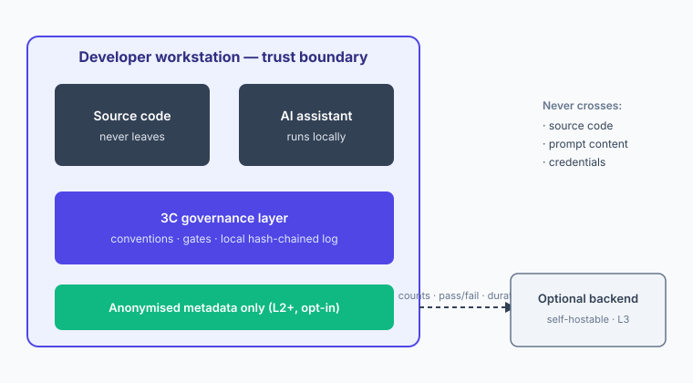

3C — security & code safety¶
This is the page to forward to your security architect or platform-security lead. It deliberately under-claims — where 3C stops, it says so plainly, because that's the part that matters most to you.
Where your code goes¶

The developer workstation is the trust boundary. 3C ships Claude Code skills — everything it adds (the skills, rules, agents, the CLAUDE.md, and the records its workflow produces, such as handover and PR artefacts) is plain files in your own git repository. There is no backend and no telemetry at L1: nothing 3C adds leaves your repo or workstation, and 3C adds no new path off your machine for source code, prompt content, or credentials. It does not change how your AI assistant already talks to its model provider — that traffic is your existing behaviour, covered by your existing agreement with that vendor. (At L2+, the only thing 3C can optionally emit is anonymised metadata — counts, pass/fail, durations — to a self-hostable backend you run.)
What defines the security posture¶
- OWASP-aligned generation. 3C ships security rule sets aligned to the OWASP Top 10 (VP-01-F04) — parameterised queries, input validation, output encoding, secure credential handling — applied at the point of generation, before code reaches review.
- Secret-scanning at write boundaries. Every skill that writes files scans for secrets before the write lands; credentials never get committed by an AI session that 3C governs.
- Security review skill.
/review(VP-02-F03) applies a team security checklist (injection, authn/z, crypto, dependency risk) with severity ratings, so AI-assisted changes get a consistent security pass. - Local-first by construction. Config and event state live on the workstation (SQLite + JSONL). No code or prompt content is persisted off-box; the developer workflow never blocks on a backend, and L2+ telemetry queues locally with no always-on egress dependency.
What L2 adds for security — shipped May 2026 (v1.5.0)¶
L2 extends the security posture along four axes — every one of them still local-first, every one of them additive to (not replacing) your existing security tooling:
- CWE Top 25 alongside OWASP Top 10. The L1 OWASP pack stays. L2 adds a CWE-mapped security rule set so AI-assisted code generation sees both lenses at once — the OWASP "what an attacker exploits" framing and the CWE "what weakness was introduced" framing. Reviewers get the explicit OWASP↔CWE mapping in the rule rationale.
- Security Scan Gate as a pre-commit hook. SAST + dependency-vulnerability scan runs per commit, with team-configurable severity thresholds. Refuses the commit on critical findings; warns and proceeds on lower severities. Writes a JSONL event regardless of outcome — so bypass patterns are visible in the audit log without relying on developers to self-report.
security-reviewersubagent shipped at L2. A dedicated Claude Code subagent your team's AI can dispatch when touching auth, crypto, or input-handling code paths. Tool allowlist declared in the agent's frontmatter; sandboxed by Claude Code's platform layer; cannot read.env*,~/.ssh/, or~/.aws/per the path-guard hook (verifiable insrc/agents/path-guard.ts).- PM-tool token handling via MCP bundled server. L2's
/3c-create-issuenow reaches Jira / Linear / GitLab / GitHub via a bundled MCP server. Tokens resolved through the OS keychain only (NFR-SEC-06) — never written to disk, never cached in process, never returned in tool output. The MCP layer is the audited credential boundary; the skill never sees a raw token.
What L2 still does NOT do — and the same honesty discipline applies:
- L2 is not a SAST replacement. The Security Scan Gate shifts severity-thresholded SAST left into the commit lifecycle, but it does not absolve you of your existing SAST programme.
- No telemetry egress at L2. Every hook telemetry event is local JSONL on the developer workstation. The L3 team backend is self-hostable when it lands; at L2 your event log does not leave the workstation. If your security architecture requires "no data leaves the device" — L2 satisfies it by construction, not by configuration.
- No new credential paths. L2 adds no places your team's credentials are written, persisted, or transmitted. Keychain is the only credential boundary; if your OS keychain is compromised, every credential on the workstation is compromised — 3C does not introduce a new exposure.
What 3C does NOT do
3C is a developer-productivity and standards-alignment framework, not a compliance product. It does not certify any standard, issue a conformity statement, or produce a regulatory evidence pack — that is a separate, future business case, not part of L1–L4. 3C is not a SAST replacement: it shifts secure-coding defaults left, it does not absolve you of your existing security review and scanning.
Evaluate it as OSS, not as a vendor¶
3C is MIT-licensed. There is no vendor to assess, no data-processing agreement to negotiate, and no telemetry you did not opt into. Evaluate it as OSS, not as a vendor — the way you evaluate any open-source dependency:
- Licence: MIT — read it in the repo
LICENSE. - SBOM: 3C ships as the npm package
@kgn-git/3c. Generate a software bill of materials with standard tooling —npm sbom --sbom-format cyclonedx(npm's built-in SBOM) orcyclonedx-npm— run in your project after install, so it captures 3C plus its transitive dependencies in context. Because 3C is git-installed (tag-pinned), the SBOM records it with agit+httpsprovenance reference rather than a registry version — that is the accurate supply-chain provenance, not an anomaly. There is no bespoke 3C command to trust; it is the standard ecosystem path. - Source of truth: every claim on this site is verifiable in
kgn-git/praise— the full requirements baseline is maintained there.
Next¶
↓ Security one-pager (PDF, ungated)
The adoption, cost, and reversal posture for the leader forwarding this page is on for engineering leaders.
What we're learning
We'd rather hear a hard question early than discover a gap late. If something here doesn't satisfy your review, raise it: start a discussion.